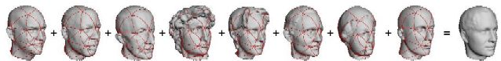

Consistent Mesh Parameterizations
Emil Praun
Wim Sweldens
Peter Schröder

Abstract:
A basic element of Digital Geometry Processing algorithms is the
establishment of a smooth parameterization for a given model. In
this paper we propose an algorithm which establishes
parameterizations for a set of models.
The parameterizations are called consistent because they share the
same base domain and respect features. They give immediate
correspondences between models and allow remeshes with the same
connectivity. Such remeshes form the basis for a large class of
algorithms, including principal component analysis, wavelet
transforms, detail and texture transfer between models, and
n-way shape blending. We demonstrate the versatility of our
algorithm with a number of examples.
Status:
Computer Graphics Proceedings (SIGGRAPH 2001), pp. 179-184, 2001
Dates:
|
January 2001:
|
Submitted & posted.
|
|
March 2001:
|
Accepted for SIGGRAPH 2001.
|
Files:
PDF v3 with low res (144dpi) and
compressed images (600K).
PDF v3 with high res (600dpi) images (Caveat:
20M).
Copyright © 2001 Emil Praun, Wim Sweldens, Peter Schröder.